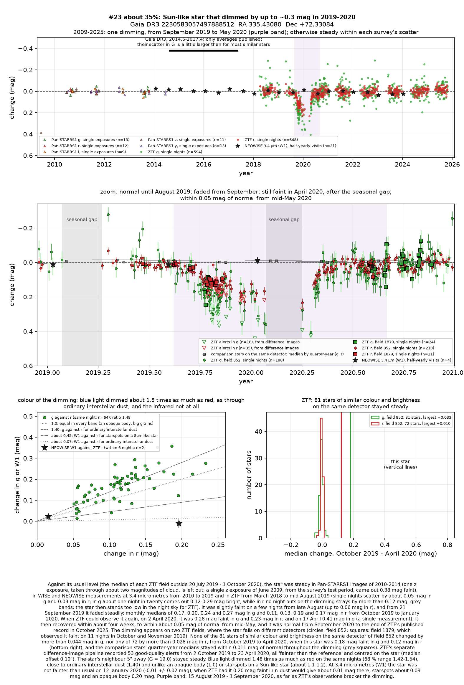
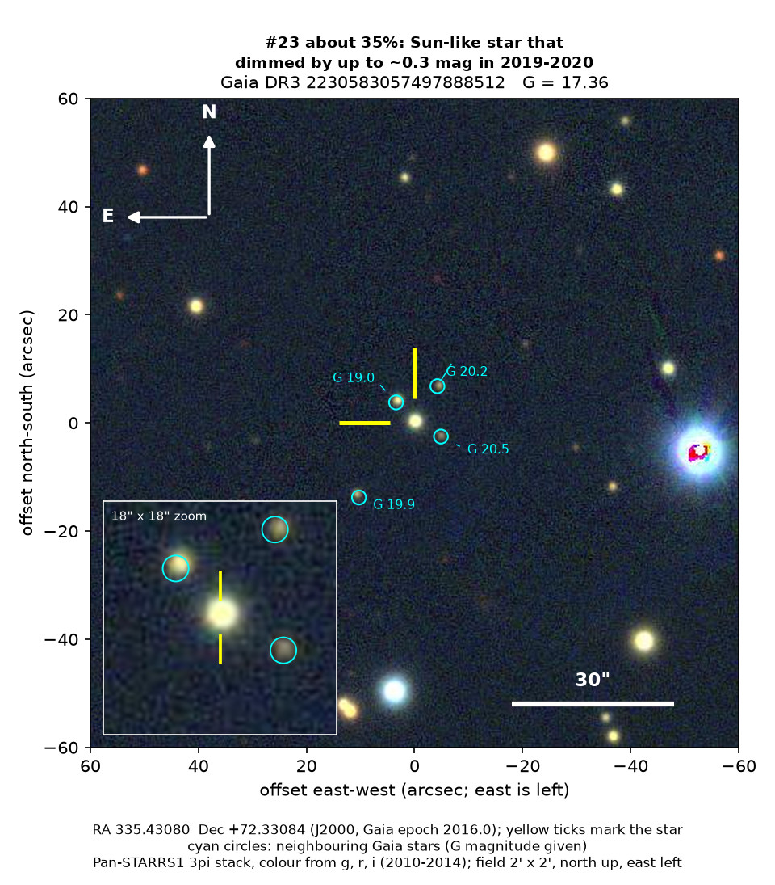
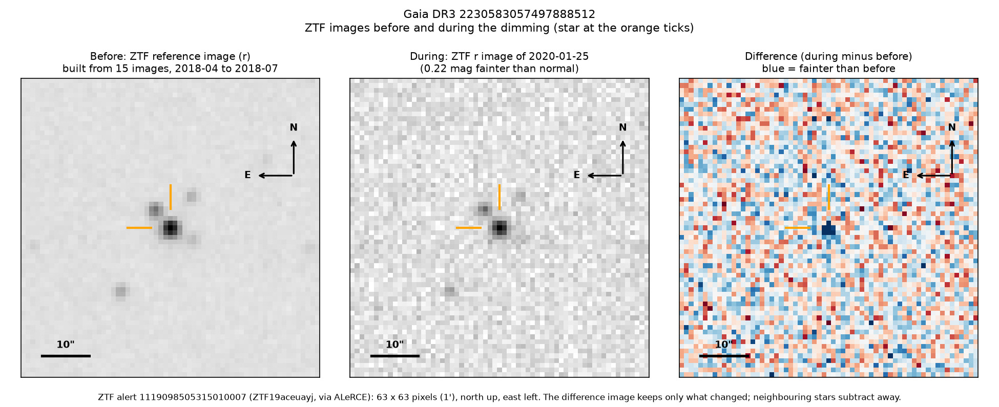

Professor of Mathematics
Paata Ivanisvili
Department of Mathematics, University of California, Irvine

Candidate 23: a Sun-like star that dimmed for eight months in 2019 and 2020
Why this estimate. The dimming is almost certainly real: ZTF (the Zwicky Transient Facility, a survey telescope at Palomar Observatory in California) recorded it on two overlapping fields, with the star on two different detectors, while similar stars stayed steady. Its colour and the unchanged infrared light fit dust. The estimate is not higher because only ZTF recorded it, and its deepest part may have fallen while the star was too low in the sky to observe; because a machine classifier calls its light curve a young star’s and Gaia (the European Space Agency’s star-mapping satellite) finds a weak hint of hydrogen emission; because Gaia’s own model of the star disagrees with its parallax; and because there is no spectrum.
How to read the pictures. The finder chart shows a patch of sky two arcminutes across, about a fifteenth of the Moon’s width, with north up and east to the left. The star sits between the two yellow ticks, and the white bar is 30 arcseconds long. On a light curve the vertical axis is magnitude, a brightness scale on which larger numbers mean fainter stars, and it is drawn so that down means fainter. Purple shading marks the dimming, and grey shading the months when the star could not be observed. Each survey uses slightly different filters, so each is compared with its own normal level. The ZTF pictures show ZTF’s reference image of the star, an image taken during the dimming, and the difference between the two, in which only what changed remains: blue means fainter and red brighter.

What changed. The star is an ordinary Sun-like star in Cepheus, a little hotter than the Sun, about 1,280 parsecs (4,200 light-years) away behind a thick layer of the Milky Way’s dust. ZTF saw it steady from March 2018 to August 2019. From 21 September 2019 it faded steadily, and by January 2020 it had lost about a fifth of its green light and a seventh of its red.
From late January to early April the star is too low in the night sky for ZTF. On 2 April 2020 it was still at least as faint, down by about a fifth in both colours. It then recovered within about five weeks, was close to normal from mid-May and has stayed steady since, to October 2025. ZTF’s alert system, which compares each new image with a reference image, flagged the star 53 times as fainter, always centred on it.
Why it might matter. Dust passing in front of the star is the likeliest cause. Green light dimmed 1.48 times as much as red, close to the 1.40 of ordinary interstellar dust; an opaque body would dim all colours equally, and starspots would give about 1.1 to 1.2. During the dimming NEOWISE found the star at its usual brightness at 3.4 microns, which rules out an opaque body and argues strongly against spots, and ZTF found no sign of rotation. An eclipse by another star would last hours or days, not months, and the two detectors make an instrumental fault unlikely. The star lies in the direction of a region of young stars, but those catalogued there lie far in front of it, and it shows no other sign of youth. The cause could be debris from a collision between planets or asteroids, or a dusty disc around an unseen companion, as in epsilon Aurigae. A spectrum would settle the star’s type and age.
No record of the dimming could be found: SIMBAD has no entry for the star, Gaia DR3 lists no variability, and VSX (the variable-star index) and the other variable-star, young-star and cluster catalogues checked do not include it. It is not among the dimming stars of Tzanidakis et al. (2025), and there is no Transient Name Server entry, Gaia alert or paper giving its Gaia number. ZTF’s alert system holds only machine-generated classifications.
- Star
- Gaia DR3 2230583057497888512, a Sun-like star (type about G0)
- Location
- RA 335.43080°, Dec +72.33084° (J2000), in Cepheus, 12.7 degrees north of the Milky Way’s mid-plane
- Distance
- about 1,280 parsecs (4,200 light-years)
- Brightness
- Gaia G = 17.36, far too faint for the eye or a small telescope
- Probability
- This candidate is unconfirmed. The percentage under the title is an estimate of the chance that it is a real, previously unrecorded case of the kind described. The estimate has not been checked by outside experts. See the introduction to all fifty-eight candidates.
- Caveat
- There is no spectrum. Only ZTF recorded the dimming: the star is too far north for SkyMapper (a telescope in Australia) and too faint for ASAS-SN (a worldwide network of small telescopes) and NASA’s TESS space telescope. Gaia’s model of the star, a cooler K star 730 parsecs away, disagrees with the parallax. The timing matches that of candidate 22, 39 degrees away on different ZTF fields, most likely by coincidence.

